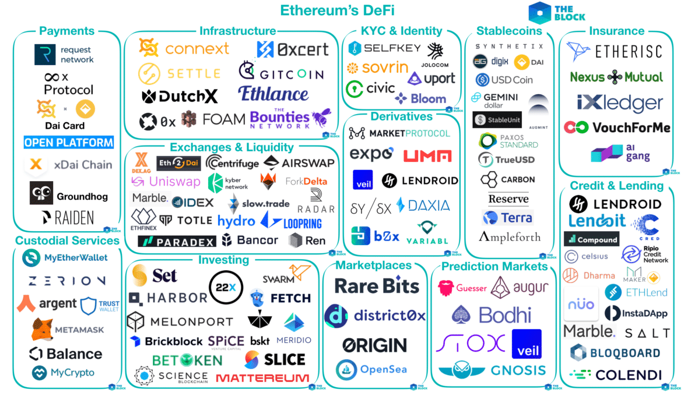

La blockchain est un type de technologie de registres distribués (distributed ledger technologies en anglais, ou DLT). Elle se présente comme une grande base de données formée de blocs, liés les uns aux autres de manière cryptographique, contenant des informations (transactions, lignes de codes etc.). Ces blocs sont ajoutés selon un protocole très précis et consultable par tous. La particularité de la blockchain est qu’elle est par essence décentralisée, car chacun peut y contribuer en formant des blocs qui sont ajoutés à celle-ci, selon certaines conditions très strictes définies par un protocole de consensus. Les cryptomonnaies sont la première application viable de la technologie de la blockchain.
La DeFi (Decentralized Finance) ou finance décentralisée est une application des crypto-monnaies et des technologies blockchain. La principale crypto-monnaie impliquée dans la finance décentralisée est Ethereum. Cette dernière permet de créer de nombreuses applications financières comme Maker avec son token DAI et autre.
L’objectif de la finance décentralisée est de permettre la transmission de valeur et la création d’une finance pour tous et sans intermédiaire comme peuvent l’être les banques ou les plateformes d’échange. La DeFi permet à n’importe qui d’obtenir des prêts. C’est un système totalement décentralisés pour les emprunteurs et il n’est pas possible qu’un prêt vous soit refusé. Il vous suffit d’avoir un accès à internet. Cela permet également aux prêteurs de faire travailler leur argent avec des taux d’intérêts décents !
Plusieurs millions d'ethers sont ainsi mis en collatéral (bloqués) pour une valeur de plusieurs centaines de millions de dollars.
Chaque jour l'écosystème DeFi évolue et se complète, l'innovation est permanente et petit à petit une certaine régulation se met en place afin de démocratiser l'utilisation des crypto-monnaies dans la finance de marchés.
Comme la plupart des biens communs il est possible d'échanger les crypto-actifs à de nombreuses fins et via la pléthore de contrats qu'il éxiste en finance traditionnelle.
Il existe cependant plusieurs nuances propres au cryptomonnaies, commençons par faire un point sur ces nuances :
L'écosystème crypto dispose donc d'un marché primaire et "secondaire" sur lesquels il est possible d'échanger de la manière la plus classique qu'il soit ainsi qu'à travers différents produits dérivés tels que les futurs, les options, le margin trading...
Il existe également plusieurs moyens de s'assurer des revenus passif en utilisant les cyptomonnaies, je pense que Finematics vous l'expliquera beaucoup mieux que moi :